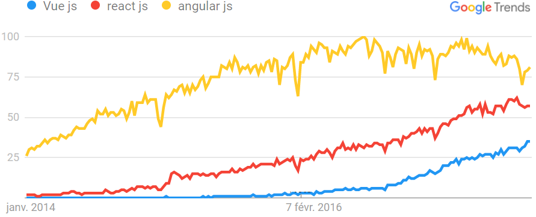
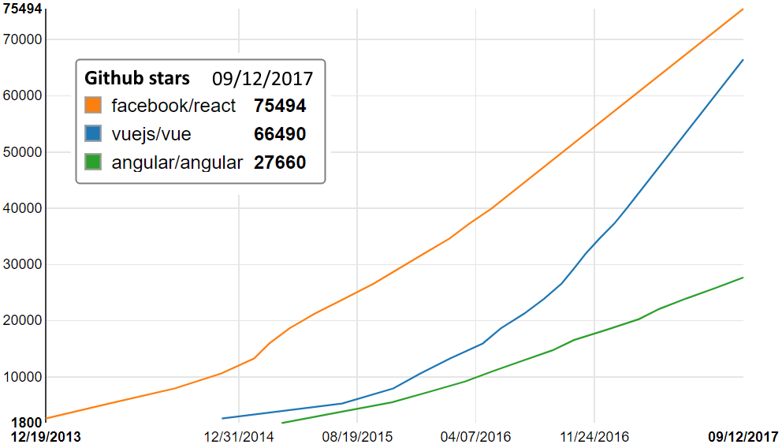

class: center, middle # Introduction to Vue.js <img src="img/logo.png" width="150"> .footnote[ Benoit Formet, Inria ] --- # What is Vue.js * #### Progressive framework for building user interfaces * Vue core => integrate everywhere * Vue + libs + tooling => SPA * #### Separate view layer from data handling * #### 2015: V1 * #### 2016: V2 * #### Backed by Alibaba, Gitlab --- # Yet another JS framework * #### Older: Template rendering + jQuery * #### 1st gen: Angular v1, knockout, polymer, etc. * #### 2nd gen: React, Angular 2+, Vue, Riot, etc. * Virtual DOM * Reusable and isolated UI components * Data decorelated from view * Events, lifecycle handling ### Why use Vue.js? * #### Elegant, Simple, Light, Powerful * #### My experience --- # Google trends <br><br>  --- # Github stars  --- # Lightweight * 30kB gzipped * 1 single `<script>` tag * Easy integration * Scale down ``` js <script src="https://unpkg.com/vue"></script> ``` --- # Minimal vue instance ``` js <script src="https://unpkg.com/vue"></script> ``` ``` html <div id="app"> {{ message }} </div> ``` ``` js var app = new Vue({ el: '#app', data: { message: 'Hello Vue!' } }) ``` <div id="app1"> {{message}} </div> --- # Powerful * Faster than React * Modern JS * Webpack (module bundler) + babel * Router (vue-router) * State management (vuex) * Hierarchy of components * JSX, render functions * Typescript * Server side rendering * Native apps... --- # Elegant * Great documentation * Clean, small API .scrollable.h300[ ``` js Vue({ el: "#app", // l'élément sur lequel attacher la vue created: function(){ // code lancé au démarrage }, mounted: function(){ // code lancé quand la vue est attachée à la page }, updated: function(){ // code lancé quand la vue est mise à jour }, destroyed: function(){ // code lancé quand la vue est détruite } data: { // nos données }, methods: { // ici les fonctions à rendre disponibles dans le HTML }, computed: { // ici on met les données à recalculer à la volée à chaque refresh } }) ``` ] ``` html <!-- Lance toto() juste au 1er click. Appelle preventDefault automatiquement. --> <a v-on:click.once.prevent="toto()">Foo</a> ``` --- # Reactive data The data in the previous example is "reactive", changing the message will update the template ``` js var app = new Vue({ el: '#app', data: { message: 'Hello Vue!' } }) app.message = 'Goodbye!' ``` <div id="app2"> {{message}} </div> --- # Data binding With `v-model` ``` html <div id="app3"> <input v-model="message" placeholder="Edit me"> <p>{{message}}</p> </div> ``` <div id="app3"> <input v-model="message" placeholder="Edit me" style="margin-left: 3px" @keypress.stop> <p>Your message is: {{message}}</p> </div> --- # Template syntax / directives * **mustache** with expressions `{{ isTrue ? 'true' : 'false' }}` * **filters** `{{ slug | capitalize }}` * **v-html** for HTML content ``` html <div v-html="message"></div> ``` * **v-bind** for attributes ``` html <p v-bind:id="myId"> </p> OR <p :id="myId"> </p> ``` * **v-on:event** for event handlers ``` html <a v-on:click="clickHandler">Do stuff</a> OR <a @click=""> </a> ``` --- # More directives * **v-if / v-else** ``` html <p v-if="message">{{message}}</p> ``` * **v-show** ``` html <p v-show="message">{{message}}</p> ``` * **v-for** ``` html <li v-for="dog in dogs">{{dog.name}}</p> ``` --- # Todo list <div id="app4"> <!-- Quand on soumet le formulaire, on ajoute la tâche --> <form v-on:submit.prevent="addTask(newTask)"> <!-- L'input est maintenant lié à la variable newTask --> <p><input v-model="newTask" placeholder="New task" @keypress.stop> <button>Add</button></p> </form> <ol> <!-- Créer un li pour chaque tache dans mon array 'tasks' --> <li v-for="task in tasks">{{task}}</li> </ol> </div> .scrollable.h400[ ``` html <div id="app"> <!-- Quand on soumet le formulaire, on ajoute la tâche --> <form v-on:submit.prevent="addTask(newTask)"> <!-- L'input est maintenant lié à la variable newTask --> <p><input v-model="newTask"> <button>Add</button></p> </form> <ol> <!-- Créer un li pour chaque tache dans mon array 'tasks' --> <li v-for="task in tasks">{{task}}</li> </ol> </div> <script type="text/javascript"> app = new Vue({ el: "#app", data: { tasks: [], // mes tâches seront stockées dans l'array 'tasks' newTask: "", // ce que contient l'input du formulaire }, methods: { addTask: function(task){ this.tasks.push(task); // on ajoute la tâche dans l'array this.newTask = ""; // on vide l'input } } }) </script> ``` ] --- # Components * Self-contained, reusable piece of code <img src="img/components.png"> --- # Components Define a new component called todo-item ``` js Vue.component('todo-item', { template: '<li>This is a todo</li>' }) ``` Now you can compose it in another component's template: ``` html <ol> <!-- Create an instance of the todo-item component --> <todo-item></todo-item> </ol> ``` --- # Composing components * Parent-child communicate via props and events * Props down, events up <br> <br> <img src="img/props-events.png" style="width: 60%"> --- # Passing props Define a prop called `task` ``` js Vue.component('todo-item', { props: ['task'], template: '<li>{{task}}</li>' }) ``` Pass data to the child component ``` html <ol> <todo-item task="learn vue"></todo-item> <todo-item v-bind:task="myTask"></todo-item> </ol> ``` --- # Emitting events ``` html <div id="counter-event-example"> <button-counter v-on:increment="incrementTotal"></button-counter> + <button-counter v-on:increment="incrementTotal"></button-counter> = <p>{{ total }}</p> </div> ``` .scrollable.h300[ ``` js Vue.component('button-counter', { template: '<button v-on:click="incrementCounter">{{ counter }}</button>', data: function () { return { counter: 0 } }, methods: { incrementCounter: function () { this.counter += 1 this.$emit('increment') } }, }) new Vue({ el: '#counter-event-example', data: { total: 0 }, methods: { incrementTotal: function () { this.total += 1 } } }) ``` ] <div id="counter-event-example"> <button-counter v-on:increment="incrementTotal"></button-counter> + <button-counter v-on:increment="incrementTotal"></button-counter> = {{ total }} </div> --- # Single file component **`Component.vue`** ``` html <template> <p>{{greeting}} World!</p> </template> <script> export default { data: function () { return { greeting: 'Hello' } } } </script> <style scoped> p { font-size: 2em; } </style> ``` --- # vue-cli ### Simple CLI tool for scaffolding Vue projects Installation ``` bash $ npm install -g vue-cli ``` Usage ``` bash $ vue init <template> <project> ``` Available templates: webpack, browserify, pwa, simple <br> webpack: A full-featured Webpack + vue-loader setup with hot reload, linting, testing & css extraction. --- # Project structure .scrollable.h500[ ``` . ├── build/ # webpack config files │ └── ... ├── config/ │ ├── index.js # main project config │ └── ... ├── src/ │ ├── main.js # app entry file │ ├── App.vue # main app component │ ├── components/ # ui components │ │ └── ... │ └── assets/ # module assets (processed by webpack) │ └── ... ├── static/ # pure static assets (directly copied) ├── test/ │ └── unit/ # unit tests │ │ ├── specs/ # test spec files │ │ ├── index.js # test build entry file │ │ └── karma.conf.js # test runner config file │ └── e2e/ # e2e tests │ │ ├── specs/ # test spec files │ │ ├── custom-assertions/ # custom assertions for e2e tests │ │ ├── runner.js # test runner script │ │ └── nightwatch.conf.js # test runner config file ├── .babelrc # babel config ├── .postcssrc.js # postcss config ├── .eslintrc.js # eslint config ├── .editorconfig # editor config ├── index.html # index.html template └── package.json # build scripts and dependencies ``` ] --- # Dev Scripts **Install** dependencies ``` bash $ npm install ``` **Run** development server on localhost ``` bash $ npm run dev ``` **Build** for production with minification ``` bash $ npm run build ``` Run unit & e2e **tests** ``` bash $ npm test ``` --- # Unit Testing ``` bash $ npm run unit ``` <dl> <dt>Karma</dt> <dd>The <i>test runner</i> that launches browsers, runs the tests and reports the results to us.</dd> <dt>Mocha</dt> <dd>The test framework that we write test <i>specs</i> with.</dd> <dt>Chai</dt> <dd>Test <i>assertion</i> library that provides better assertion syntax.</dd> <dt>Sinon</dt> <dd>Test utility library that provides <i>spies, stubs</i> and <i>mocks.</i></dd> </dl> --- # Unit test example **`Hello.spec.js`** ``` js import Vue from 'vue' import Hello from '@/components/Hello' describe('Hello.vue', () => { it('should render correct contents', () => { const Constructor = Vue.extend(Hello) const vm = new Constructor().$mount() expect(vm.$el.querySelector('.hello h1').textContent) .to.equal('Welcome to Your Vue.js App') }) }) ``` --- # End-to-end Testing ``` bash $ npm run e2e ``` <br> <dl> <dt>Nightwatch.js</dt> <dd>Highly integrated test runner built on top of <i>Selenium</i>.<br>Preconfigured for you.</dd> </dl> --- # End-to-end example **`test.js`** ``` js // For authoring Nightwatch tests, see // http://nightwatchjs.org/guide#usage module.exports = { 'default e2e tests': function (browser) { // automatically uses dev Server port from /config.index.js // default: http://localhost:8080 // see nightwatch.conf.js const devServer = browser.globals.devServerURL browser .url(devServer) .waitForElementVisible('#app', 5000) .assert.elementPresent('.hello') .assert.containsText('h1', 'Welcome to Your Vue.js App') .assert.elementCount('img', 1) .end() } } ``` --- class: middle, center # Conclusion --- class: middle, center # Thanks